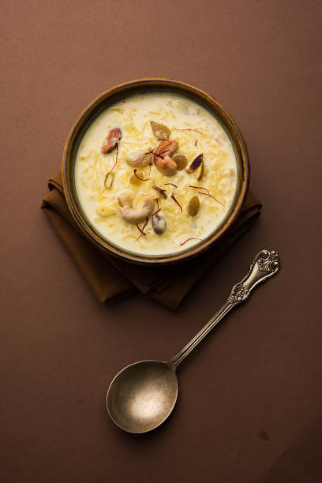

Kheer

Description
Kheer is a creamy Indian rice pudding made with rice, milk, and sugar.
Ingredients
- 1 cup rice
- 4 cups milk
- 1 cup sugar
- Cardamom and nuts for garnish
Steps
- Wash and soak rice for 30 minutes.
- Boil milk in a pan and add soaked rice.
- Cook on low heat until rice is soft and mixture thickens.
- Add sugar and stir; serve chilled or warm.